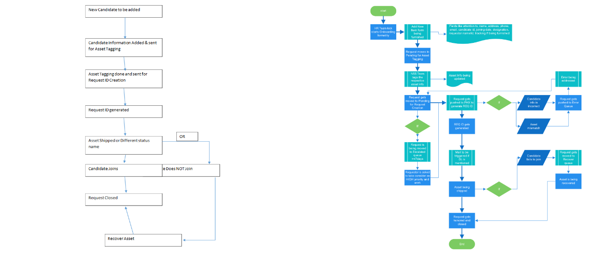

The organization was relying on a legacy system and reports being generated out of excel sheets to track status of onboarding new associates. Problem was, the legacy system was outdated and consumed a lot of productive hours and lack of standardized platform made it harder to track all records. Associates had to collaborate offline through e-mail which made it very difficult to keep track of records, especially when they are in huge volumes!
I began the initial process with a series of user interviews towards identifying the usage pattern, context and scenario. This made identifying the comprehensive list of KPI’s quite simple. With the data I discovered I was able to come up with a new design and new scheme process.
I had complete room to ideate/conceptualize the structure and come up with a proper workflow process. The only challenge was the timeline for delivery. Went with low-fi wireframes and detailed out information design. Post design, showcased solution to the users who found the new process easier and intutive. Delivered a complete interaction design workflow.
Microsoft Visio, Word, Powerpoint
Post several discussions and interviews with the users, I was able to understand what their everyday function was. To get a better overview on it, I sketched out the process currently followed to identify improvement areas. Through the base version of the process and several interviews later, I defined the process followed with areas of enhancements. After getting a sign off on the proposed workflow, I proceeded to the design phase.
Although I had several other ideas and more innovative methods of approaching the problem statement, the technology being used to develop had its limitations. For this project, I had to limit most of my design thoughts as it had a direct impact on the performance of the application which directly translates to productivity loss. So, the key learning is: Stylish and amazing visualization is not always the best option! User task and productivity always takes precedence over graphics.